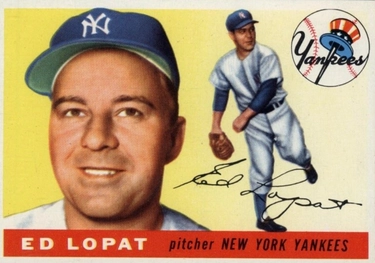

Eddie Lopat "The Junkman"
Career Highlights & Facts
(Facts are AI-generated and may require verification)
- Mastered a repertoire of 72 distinct pitches by varying speeds, arm angles, and deliveries.
- Renowned for a deceptive pitching style that relied on precision rather than overpowering velocity.
- Served as an unofficial pitching coach for teammates, helping refine mechanics and mental approaches to the mound.
Would you like to find out more about Eddie Lopat?
Read Player Biography
Eddie Lopat
January 4, 2012
/
in
BioProject - Person
1950s All-Stars
Managers
,
Scouts
/
by
admin
This article was written by
Zita Carno
Eddie Lopat, “The Junkman,” teamed with fireballers
Vic Raschi
and
Allie Reynolds
to form the Big Three starting pitchers on the New York Yankees’ five straight World Championship clubs from 1949 through 1953.
He was born Edmund Walter Lopatynski on June 21, 1918, the first of seven children. The family lived on the Lower East Side of Manhattan in New York City, later moving uptown to be closer to the shoe-repair shop owned and operated by father John.
Lopat went to DeWitt Clinton High School. The school did not have a baseball team, so he played with outside teams. His usual position was first base. From an early age he had been a Yankee fan, having grown up with the Bombers of 1927 and beyond, and quite often he and some schoolmates played hooky to go to a ball game. He dreamed of playing for the Yankees one day.
While working summers as an usher at Radio City Music Hall, he attended a tryout held by the New York Giants. He was told he wouldn’t do; he couldn’t make the throw to second base. He went to a Dodger tryout, and they signed him to a minor league contract in 1936. The first thing he did was shorten his name to Lopat so it would fit better into a box score, the way Cornelius McGillicuddy had become
Connie Mack
.
The scout who used the phrase “good field, no hit” might have been describing Eddie Lopat. After two false starts he was with Greensburg in the Penn State Association, but his .229 batting average got him packed off to Jeanerette, Louisiana, in the Evangeline League.
Warming up with a catcher before a game, he put a little something on the ball. His manager,
Carlos Moore
, noticed this and told him to throw a curve. Lopat did. Moore told him that with the right coaching he would become one of the best pitchers in the league.
Exit the first baseman, enter the lefthanded pitcher. In his first mound appearance, in relief, he allowed just two hits in 6 2/3 innings.
Still, he bounced around the minors for seven years: from Jeanerette to Kilgore, to Shreveport, to Longview, back to Shreveport. In 1939 he started experimenting with a screwball, which would later become his best pitch. And in 1940 he found love; he married Mary Elizabeth Howell, known as Libby. When he was ready to pack it in and return to New York, she persuaded him to give it one more year.
In midseason of 1942, he joined Little Rock of the Southern Association — a higher-level minor league — and for the first time he began to feel that he was getting someplace. He made his winter home in Little Rock and went into business there. He won his share of games, going 19-10 in 1943 with an ERA of 3.05. The league president,
Billy Evans,
a former American League umpire and general manager, talked him up to managers and scouts, but the scouts were not interested; Lopat was small for a pitcher at 5’10” and did not have an overpowering fastball. Evans finally caught the attention of the Chicago White Sox, who agreed to take Lopat on a thirty-day trial basis.
It was 1944, and big-league teams were desperate to replace players who had gone into military service. It is not known how Lopat escaped the draft. He may have been exempt for medical reasons; he suffered from time to time with ulcers and other gastrointestinal ailments that would later require surgery.
In his debut, on April 30, 1944, he lost to the St. Louis Browns, as the Browns charged toward their only American League pennant. In his next start, May 4, he beat the Cleveland Indians, 2-1, and went on to establish himself as a major-league pitcher. He also established his mastery over the Indians; he compiled a 40-13 career record against the team the Yankees often had to beat to win the pennant.
Over the next four seasons Lopat won 50 and lost 49 for a White Sox club that never had a winning record. He developed a simple and direct philosophy of pitching: “Get the ball over the plate and make them hit it.”
In 1946 future Hall of Fame pitcher
Ted Lyons
returned from the war, and Lopat sought his advice. Lyons showed him the slow curve and the short-arm and long-arm deliveries, which gave Lopat twice as many pitches, and generally put the finishing touches on a pitcher who had already achieved some success.
The New York Yankees had been watching Ed Lopat. On February 24, 1948, they acquired him in return for three players: catcher
Aaron Robinson
and pitchers
Bill Wight
and
Fred Bradley
. Tom Meany, in
The Magnificent Yankees
, quotes general manager
George Weiss
:
“We won the pennant and the World Series last fall, and I think maybe we could repeat this year without help but it is good for a ball club to make changes.
Yogi Berra
is coming along now and we can afford to give up Robinson. It peps up the whole ball club to know that we have another starting pitcher and haven’t hurt ourselves any in making the trade.”
Weiss went on: “Did you notice his record with the White Sox for the last four years? He averaged about one walk every four innings. Any pitcher who can get the ball aver the plate can win for us.”
The Yankees did not win the pennant that year, but Lopat compiled an 17-11 record with a 3.65 ERA. He continued to experiment on the mound, often getting to the ballpark earlier than anyone else so he could work on old deliveries and new ones, refining this pitch, figuring out new wrinkles on that pitch, adding still another delivery to his constantly expanding repertoire.
He and Libby bought a home in nearby Hillsdale, New Jersey, and set about raising two children, John and Melissa. He recalled one day when his son came home from school unhappy. There had been an intramural ball game, and when Johnny was asked how he did at the plate he replied with some bitterness, “I never got to bat.” He explained, “The teacher made up the lineups, and the first one in the batting order hit first
every inning
!” For someone batting seventh this was a catastrophe.
For his teammates, Lopat was an extra pitching coach. He worked closely with coach
Jim Turner
; Turner handled the mechanics while Lopat concentrated on the mental aspects of the art and science of pitching. Lopat showed
Allie Reynolds
how to slow down his delivery and change speeds. He pinpointed a problem for rookie
Whitey Ford
. Ford was getting racked up, and first baseman
Tommy Henrich
told him, “You know, that first base coach is calling every pitch you’re throwing.” The next day Lopat and Turner took Ford to the bullpen and had him throw from the stretch, and Lopat immediately spotted the problem: Ford had his glove hand in one position for the fastball and in another when he was going to throw a curve. The problem was quickly solved.
Lopat was known by a number of names -“the Junkman,” the “cute little lefthander.” To
Ted Williams
, he was “that bleeping Lopat.” Yankee broadcaster
Mel Allen
called him “Steady Eddie.”
There were differing views of his pitching motion. Some said he looked like a robot or a wind-up doll in need of some WD-40. Others described his delivery as smooth, easy, stylish. Most used the same word to characterize it: deceptive. Williams, when asked to name the five toughest pitchers he had faced, placed Eddie Lopat at the head of the list.
A cartoon in a June 1954 issue of
The Sporting News
depicts Eddie with the caption, “The Junkman gives them a little of this and a little of that — but nothing good and very little they will wrap up and bring home,” and a frustrated batter complaining “Ya could stand up here for a week and not see anything ya want!”
Lopat once told Allie Reynolds, “Take four pitches — the fast ball, the curve, the slider and the screwball. Now throw these at different speeds and you have 12 pitches. Next, throw each of these 12 pitches with a long-armed or short-armed motion, and you have 24 pitches.” He neglected to mention what you would have if you threw them with different arm angles, overhand, three-quarters and sidearm: 72 pitches.
And he kept adding new ones. In 1953 he unveiled the “slip pitch,” a variation on the palm ball taught by White Sox manager
Paul Richards
. And what was that pitch? “Get a knuckleball grip,” the lefthander explained, “and throw the slider with it.”
In 1949, under new manager
Casey Stengel
, the Yankees began their historic run of five straight World Series championships. Lopat won 15 games in ’49, then 18, then 21.
In 1952 he was shelved by arm trouble. Diagnosed with tendinitis in his shoulder, he underwent what was considered a radical treatment — a series of ten X-rays. When he came off the disabled list, he won five of his next seven starts. He finished the season with a 10-5 record and a 2.53 ERA, the lowest of his career to that point. But he was approaching his 35th birthday and never again made as many as 25 starts in a season.
The next year he lowered his ERA to 2.42, best in the league, and also led with a winning percentage of .800 on 16 wins against 4 losses. In 1954 he managed a 12-4 record, but his ERA swelled to 3.55.
He won four and lost eight in the first half of the 1955 season. Shortly after he turned 37 the Yankees traded him to the Orioles for pitcher
Jim McDonald
.
During the Yankees’ five-year championship run, Lopat won 80 games, plus four more in seven World Series starts, to 92 victories for Raschi and 83 for Reynolds. He later told writer Peter Golenbock in Dynasty, “We had an
esprit de corps
on that ball club. There wasn’t one jealous bone on that whole ball club… Also, the older players used to reprimand the younger ones for lack of hustle. If they didn’t put out, we’d say, ‘you’re playing on this club and you’d better put out, because that’s the way we play ball here.’”
When Lopat arrived in Baltimore, manager Paul Richards, who prided himself on his ability to teach pitching, showed the veteran a grip and a motion and said, “If you do this, I think it will help you.” Lopat said, “This? Oh, I’ve got that here, here, here and here” — and demonstrated four different spins and release points. And then he rubbed it in with, “What do you think I’ve been getting you out with all these years?”
He pitched ten times for the Orioles, posting a 3-4 record, then retired.
He busied himself with off-season barnstorming and the baseball academy he ran in Florida and took time to be with his family. He also stayed in touch with his Yankee family: he and Libby had cemented a bond with Vic and Sally Raschi and Allie and Earlene Reynolds, friendships that would last the rest of their lives.
In 1956 the Yankees hired him to manage their Triple-A Richmond club. He ran the team for three years, including the first year as playing manager, when he went 11-6 with a 2.85 ERA. In 1960 the Yankees made him their pitching coach.
Lopat left when
Ralph Houk
replaced Stengel as manager after the 1960 World Series. In mid-1961, his longtime teammate
Hank Bauer
became manager of the struggling Kansas City Athletics. He promptly hired a new pitching coach, Eddie Lopat, and kept him through the 1962 season. But Bauer couldn’t lift the A’s out of ninth place, and Lopat succeeded him as manager in 1963.
The team fared little better, with a 90-124 record under Lopat, and by mid-1964 he spilled out of owner
Charlie Finley
‘s revolving door. He stayed with the Athletics as a scout until they moved to Oakland in 1968.
He never left the game. Lopat scouted for the new Kansas City Royals, the Yankees, the Montreal Expos and the Major League Scouting Bureau. He formed a friendship with Commissioner Fay Vincent, even though he confessed that he had taught the whole Kansas City pitching staff to throw the spitball.
In 1990 he was diagnosed with pancreatic cancer. After treatment he was well enough to visit Vincent, who was hospitalized. Lopat told him “You don’t want to hear about my problems. I don’t want to hear about yours. Let’s talk baseball.” And they did, for hours. In his memoir,
The Last Commissioner
, Vincent said it was one of the best times of his life.
But the cancer returned. In June 1992, he visited his son John in Darien, Connecticut, and on the 15th — six days short of his 74th birthday — he passed away quietly. The first person Libby called was Sally Raschi, herself a widow, and within an hour several of the other members of the Yankee dynasty called.
Fay Vincent recalled:
“A lot of the old great Yankees, the Yankees of my youth, attended his funeral. Tommy Henrich, of course, was there. Henrich showed up for funerals, even if it meant flying across the country to do so. That’s what the old-school gents do. He’s still Old Reliable.
George Steinbrenner
was there. Yogi was there. I was there. I was a reader. I read from St. Paul’s first letter to the Corinthians. All about love. Later, my old friend Frank Slocum said, ‘It took Eddie Lopat to get Yogi, Steinbrenner and Fay into the same church at the same time.’ Slocum had it right. Eddie could get anybody together. His enthusiasm was infectious. I miss him.”
Eddie Lopat is buried in St. Mary’s Cemetery in Greenwich, Connecticut.
Epilogue
Eddie Lopat was “the Junkman,” “Steady Eddie,” “that bleeping Lopat.” And to me he was the most incredible pitching coach anyone could ever hope to work with.
I first met Eddie in 1951. I was in my senior year in high school and playing sandlot baseball; I was a pretty good pitcher but I felt I needed a pitch I could go to when I needed a strikeout. For me, that pitch could well be the slider, and I wanted to ask one of the Yankee pitchers about it. I got my chance when I went to a game at Yankee Stadium to see Yanks and the Indians battle for first place.
The Yankees won, 2-1, in the bottom of the ninth on a spectacular suicide squeeze by
Phil Rizzuto
that scored
Joe DiMaggio
from third, and the losing pitcher,
Bob Lemon
, was so furious that he threw his glove and the ball into the backstop screen and stormed off the mound cursing everything and everybody — including himself. It was Lopat’s 20th win of the season — a nice way to win 20, I thought — and it occurred to me at that moment that he was the one I should ask. So I waited outside the players’ entrance along with a huge mob, unsure how to phrase my question, not knowing what to expect, and when he came out a half hour or so later I fell into step beside him. The only thing I could think of to say at that time was “Excuse me, Mr. Lopat, could I ask you something?”
He couldn’t have been more encouraging. He stopped in his tracks and said, in a calm, matter-of-fact way, “Go ahead, I’m listening.” I took a deep breath and told him that I just wanted to ask him something about the slider. He said nothing but motioned to me to follow him out of the way of the crowd. And then he took a few minutes to show me how to throw it. “Throw it like a curve,” he said, “but roll your wrist, don’t snap it.” As he spoke he showed me the off-center grip he used and the wrist action, slow motion at first and then at the normal speed one would use when throwing the pitch. And then he opened a door and invited me to step inside: “Go ahead, try it.” He watched and made a couple of comments, and that was it.
A year later I ran into him again. I had gone to the ballpark and was heading far Gate 4, where I usually went in to get to my favorite seat, when I heard someone call to me. It was Eddie Lopat, who had been talking to somebody and had seen me. I went over to where he was standing, and his first wards were “How’s that slider coming along?” Thus began a series of conversations about pitching over the next three years, interspersed with demonstrations of one thing and another, and I found that if I had a question or a pitching problem I couldn’t handle, I could talk to him. He gave me a great deal of advice and assistance, and at one point when I needed it he gave me a powerful psychological shot in the arm. I’ll never forget one thing he said to me one day when we were talking about pitching repertoire: “The most important pitch you can have in your repertoire is the noodle.” I knew immediately what he meant.
He was the kind who would take the time to share his knowledge and expertise with anyone who was interested, who really wanted to know, much the same way the great Ted Williams was about hitting. I certainly became a better and more effective pitcher because of him. Steady Eddie, wherever you are, thank you.
Sources
Maury Allen,
Baseball: The Lives Behind The Seams
. Collier, 1990.
Peter Golenbock,
Dynasty-The New York Yankees, 1949-1964
. Prentice Hall, 1975.
Tommy Henrich (with Bill Gilbert),
Five O’Clock Lightning
. Birch Lane Press, 1992.
Leonard Koppett,
The New Thinking Fan’s Guide to Baseball
. Fireside, 1991.
Bill Lee,
The Baseball Necrology
. McFarland, 2003.
David Pietrusza et.al., editors,
Baseball: The Biographical Encyclopedia
. Total/Sports Illustrated, 2000.
Phil Rizzuto (with Tom Horton),
The October Twelve
. Forge Books, 1994.
The Sporting News
: Various articles from 1944-1964.
Fay Vincent,
The Last Commissioner-A Baseball Valentine
. Simon & Schuster, 2002.
Many conversations between the author and Ed Lopat from 1951 through 1954.
Full Name
Edmund Walter Lopat
Born
June 21, 1918 at New York, NY (USA)
Died
June 15, 1992 at Darien, CT (USA)
Tags
1950s All-Stars
·
Managers
·
Scouts
·
Career Totals
| WAR | W | L | ERA | G | GS | SV | IP | SO | WHIP |
|---|---|---|---|---|---|---|---|---|---|
| 32.2 | 166 | 112 | 3.21 | 340 | 318 | 3 | 2439.1 | 859 | 1.277 |
Statistics via Baseball-Reference.com
The Original Clue